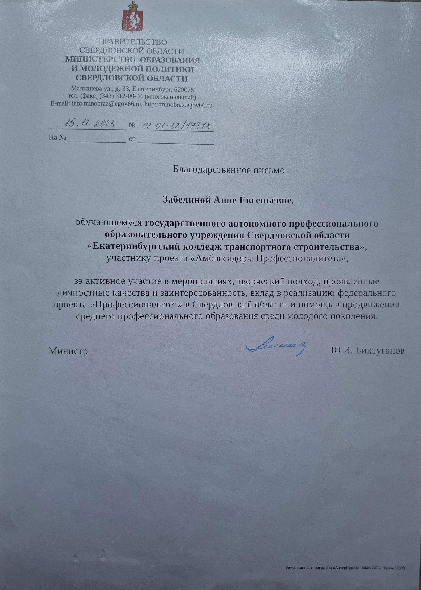

Портфолио студента
Министерство образования Свердловской области
ГАПОУ СО "Екатеринбургский колледж транспортного строительства"
ФИО: Забелина Анна Евгеньевна
Специальность: 09.02.07 Информационные системы и программирование
Группа: ПР-32
Курс: 3
Результаты обучения (ОК и ПК из ФГОС по специальности)
Общие компетенции (ОК)
- ОК 01. Выбирать способы решения задач профессиональной деятельности
- ОК 02. Использовать современные средства поиска, анализа и интерпретации информации
- ОК 03. Планировать и реализовывать собственное профессиональное и личностное развитие
- ОК 04. Эффективно взаимодействовать и работать в коллективе и команде
- ОК 05. Осуществлять устную и письменную коммуникацию
- ОК 06. Проявлять гражданско-патриотическую позицию
- ОК 07. Содействовать сохранению окружающей среды, ресурсосбережению
- ОК 08. Использовать средства физической культуры для сохранения и укрепления здоровья
- ОК 09. Пользоваться профессиональной документацией на государственном и иностранном языках
Профессиональные компетенции (ПК)
- ПК 1.1. Формировать алгоритмы разработки программных модулей
- ПК 1.2. Разрабатывать программные модули
- ПК 1.3. Выполнять отладку программных модулей
- ПК 1.4. Выполнять тестирование программных модулей
- ПК 1.5. Осуществлять рефакторинг и оптимизацию программного кода
- ПК 1.6. Разрабатывать модули программного обеспечения для мобильных платформ
- ПК 2.1. Разрабатывать требования к программным модулям
- ПК 2.2. Выполнять интеграцию модулей в программное обеспечение
- ПК 2.3. Выполнять отладку программного модуля
- ПК 2.4. Осуществлять разработку тестовых наборов и тестовых сценариев
- ПК 2.5. Производить инспектирование компонент программного обеспечения
- ПК 4.1. Осуществлять инсталляцию, настройку и обслуживание программного обеспечения
- ПК 4.2. Осуществлять измерения эксплуатационных характеристик программного обеспечения
- ПК 4.3. Выполнять работы по модификации отдельных компонент программного обеспечения
- ПК 4.4. Обеспечивать защиту программного обеспечения компьютерных систем
- ПК 11.1. Осуществлять сбор, обработку и анализ информации для проектирования баз данных
- ПК 11.2. Проектировать базу данных на основе анализа предметной области
- ПК 11.3. Разрабатывать объекты базы данных
- ПК 11.4. Реализовывать базу данных в конкретной системе управления базами данных
- ПК 11.5. Администрировать базы данных
- ПК 11.6. Защищать информацию в базе данных
О себе
Меня зовут Анна Забелина, я студентка 3-го курса ГАПОУ СО "ЕКТС" по специальности "Информационные системы и программирование". За время обучения я освоила современные технологии разработки программного обеспечения и приобрела ценные навыки работы в команде.
Я обладаю аналитическим складом ума, внимательна к деталям и стремлюсь к постоянному профессиональному развитию. Легко обучаюсь новым технологиям и умею эффективно работать с большими объемами информации.
Освоенные программные продукты и технологии
- Языки программирования: C++, C#, Kotlin, JavaScript
- Базы данных: MySQL, SQL Menegment
- Веб-технологии: HTML, CSS
- Системы контроля версий: Git, GitHub
- Операционные системы: Windows
- Инструменты разработки: Visual Studio, VS Code
Личностные качества
- Ответственность и дисциплинированность
- Умение работать в команде
- Стрессоустойчивость
- Быстрая обучаемость
- Креативное мышление
Достижения
Дипломы за призовые места
Сертификаты об участии
Работы
Курсовые работы (проекты)
Отчёты по учебной и производственной практикам
Исследовательские работы, проекты
Документы
Сертификаты и свидетельства о дополнительном образовании

Сертификат "Инструменты искусственного интеллекта" (2025)
Характеристика
Я гражданин
Грамоты, благодарности и благодарственные письма

Благодарственное письмо от Министерства образования (15.12.2023)